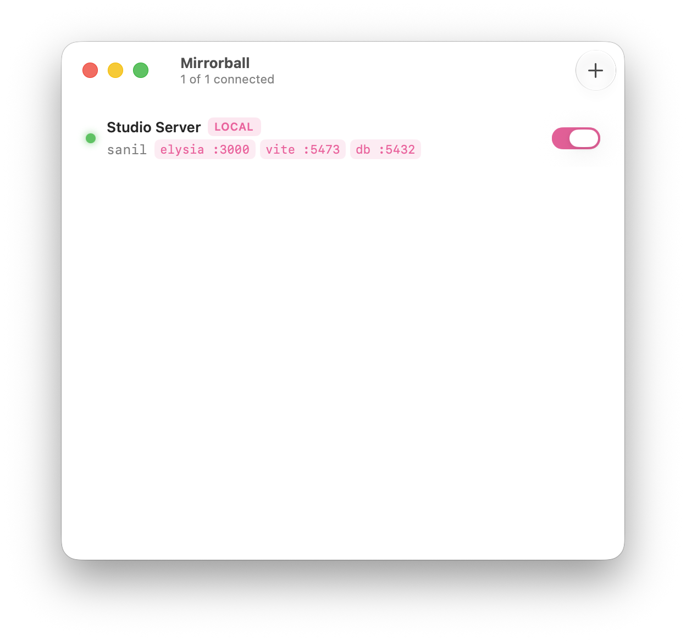
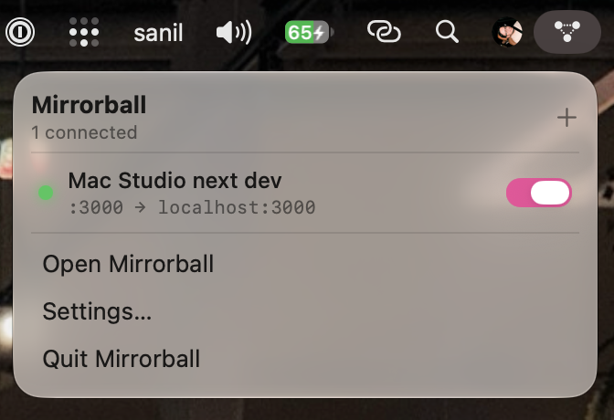

Menu bar & window
A status-bar item with quick toggles, plus a full management window. Close the window — it stays running up top.
SSH port forwards · for macOS
A dead-simple, native SSH port-forward manager. Flip one on to bring a forward up; if it drops — sleep, network blip, server hiccup — it quietly reconnects. Lives in your menu bar and a proper window.

One window. Every forward is a row with a status dot, an address mapping, and a switch.
What it does
It drives the system ssh binary, so it reuses your existing config, keys and agent. Nothing to set up twice.
A status-bar item with quick toggles, plus a full management window. Close the window — it stays running up top.
Per-forward supervision with exponential backoff. Tunnels survive sleeps and blips; real failures surface the actual reason.
1s → 30s backoffEvery forward type you actually use — pull a remote port home, expose a local one, or run a SOCKS proxy.
-L · -R · -DSSH agent, a private key with passphrase, or a password — secrets live at rest in your Keychain, never on the command line.
Inherits ~/.ssh/config, keys and agent. Host aliases populate the editor’s picker automatically.
SwiftUI switches, grouped forms, SF Symbols, automatic light/dark, launch-at-login, and notifications on drops & reconnects.
How a forward works
Pick a host alias, choose local / remote / dynamic, set the ports. The editor knows every option you reach for.
Mirrorball spawns a supervised ssh -N and watches it. Green means it’s up.
It reconnects through sleeps and blips, and tears every child down cleanly on quit. No leaked tunnels.

The status-bar glyph reflects the aggregate state at a glance. Toggle any forward without leaving what you’re doing.
Built carefully
Anyone running ps can read a process’s arguments. So Mirrorball never puts a password or passphrase there. Secrets stay in the Keychain and reach ssh through SSH_ASKPASS on the child’s environment alone.
Download the disk image and drag Mirrorball into Applications. It keeps itself up to date from there.
macOS 26+ · Apple Silicon · v0.1.2